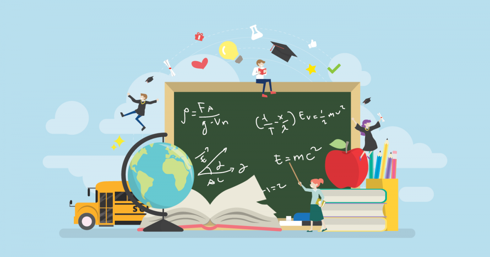

Sinlui3 |
||||
|
Sinlui3 adalah platform pendidikan online yang komprehensif yang dirancang untuk memenuhi berbagai kebutuhan pendidikan siswa, guru, dan orang tua. Kami memahami bahwa setiap individu memiliki pendekatan belajar yang unik, dan karena itu, kami berusaha menyediakan beragam materi pembelajaran yang dapat diakses dan disesuaikan dengan kebutuhan pengguna. Kami berkomitmen untuk menyediakan konten yang berkualitas, bervariasi, dan selalu diperbarui sesuai dengan perkembangan kurikulum dan teknologi pendidikan terbaru. Dengan pendekatan inklusif dan berfokus pada kebutuhan siswa, Sinlui3 bertujuan menjadi salah satu sumber daya pendidikan online terkemuka yang dapat diandalkan sepanjang perjalanan akademik Anda. Visi utama Sinlui3 adalah membantu setiap siswa mencapai potensi terbaik mereka. Kami percaya bahwa dengan memberikan akses ke materi pembelajaran yang mendalam, interaktif, dan relevan, kami dapat memberdayakan siswa untuk mengembangkan keterampilan dan pengetahuan yang diperlukan untuk mencapai kesuksesan akademik. Untuk mencapai tujuan ini, kami bekerja sama dengan para pendidik dan ahli pendidikan untuk mengembangkan konten yang tidak hanya mengajarkan konsep-konsep inti tetapi juga mendorong pemikiran kritis, kreativitas, dan keterampilan memecahkan masalah.  Di Sinlui3, kami memahami pentingnya pelajaran inti seperti Matematika, Bahasa Inggris, Bahasa Indonesia, Ilmu Pengetahuan Alam, dan Ilmu Pengetahuan Sosial. Namun, kami juga percaya bahwa pendidikan yang seimbang melibatkan lebih dari sekadar akademik. Oleh karena itu, kami juga menawarkan pelajaran yang lebih holistik, termasuk seni, musik, teknologi, dan keterampilan hidup. Pendekatan kami dirancang untuk mendukung perkembangan siswa secara menyeluruh, membantu mereka menjadi individu yang percaya diri, kreatif, dan memiliki keterampilan yang relevan dengan dunia modern. |
||||
| Kelompok 4 XI MIPA 3 | ||||